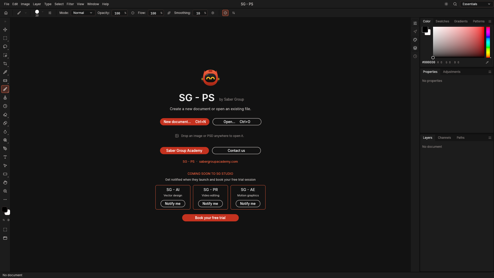

محرّر صور احترافي
مجاني
من المتصفح على طول
من غير تسطيب ولا تسجيل · افتح واشتغل

01
حدّد العنصر بضغطة واحدة
Select Subject بقى أدق: الصوابع والحواف الناعمة والفراغات
Select › Subject


02
حرّك، كبّر، ولفّ براحتك
Free Transform بنقطة ارتكاز ثابتة في النص و Undo لكل خطوة
Ctrl + T

0°
كل اللي محتاجه في مكان واحد
طبقات و Blend Modes
Masks · Clipping · Groups
Masks · Clipping · Groups
بيفتح ملفات PSD
بالطبقات · PNG · JPG · RAW
بالطبقات · PNG · JPG · RAW
خطوط جهازك
عربي وإنجليزي في أداة النص
عربي وإنجليزي في أداة النص
Eyedropper وألوان
خد أي لون من الصورة ولوّن بيه
خد أي لون من الصورة ولوّن بيه
اختصارات فوتوشوب
Ctrl+C · Ctrl+V · Alt-Clip · Tab
Ctrl+C · Ctrl+V · Alt-Clip · Tab
حفظ تلقائي
شغلك في أمان لو حصل أي حاجة
شغلك في أمان لو حصل أي حاجة
وكمان على الكمبيوتر
نسخة ويندوز وماك · شغالة من غير إنترنت
Windows
macOS
جرّبه مجانًا دلوقتي
على المتصفح أو حمّله على جهازك
studio.engsaber.space